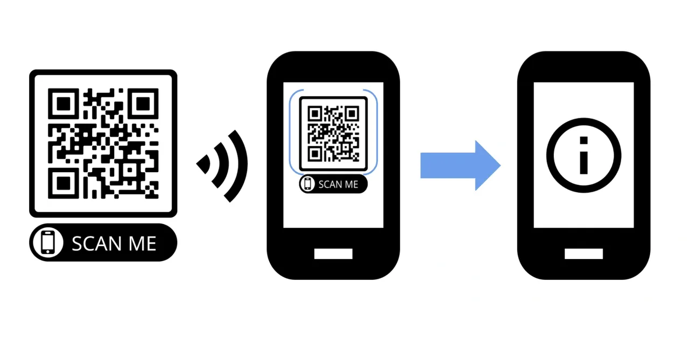

QR Codes Explained

Overview
This article will help you undertand:
- What a QR code is
- How QR codes work
- The pros of using QR codes
- The different types of QR codes
- The components of QR codes
- Where you can create QR codes
About QR codes
A Quick Response (QR) code is an interactive two-dimensional barcode that compresses data into a small scannable box, consisting of small patterned squares and dots encoded with pieces of information.
QR codes help you access information easily and quickly. All you need to do is scan a QR code with a smartphone or tablet, and it will direct you to a webpage, video, message, calendar event, or phone number. You can place and find QR codes on banners, business cards, leaflets, public posters, and more.
How QR codes work
Many smart devices (e.g., iPhone, Android, tablets, etc.) have integrated QR readers into the camera feature or offer QR reader applications for download to scan QR codes. After you scan a QR code with a smart device, it will notify you that the QR code has been found and direct you to the desired information. You can scan QR codes vertically, horizontally, or at any angle due to their two-dimensional design.
Advantages of QR codes
QR codes are used as a shortcut to access information easily and quickly. Unlike barcodes, QR codes do not need a specific machine to be read, just a smart device. QR codes provide a digital dimension to businesses, products, and marketing because products and services can be promoted and shared through QR codes, which can help improve engagement and conversions.
In comparison to traditional barcodes, QR codes are reliable. QR codes can function while impaired because they have a built-in error correction in the design, which means that even when the QR code gets damaged, it will find the correct redirection.
QR codes types
QR codes can either be static or dynamic. Static and dynamic QR codes are dissimilar and used for different purposes. Static QR codes provide limited functionality, while dynamic QR codes do not. Learn about the differences and use cases of both below.
Static QR codes
Static QR codes are permanent or fixed, which means that after you generate a QR code, the encoded data cannot be changed or updated. Also, you cannot track metrics for static QR codes; this would include:
- Total number of scans
- Unique visitors
- Location of scans
- Device type
- The average total of scans per day
Although static QR codes provide limited functionality, they are helpful for personal use—such as resumes or business cards—and temporary marketing campaigns.
Dynamic QR codes
Dynamic QR codes can be modified even after you generate them. They also scan and load faster in comparison to static QR codes. Metrics for dynamic QR codes can be tracked, which can help businesses and marketers better understand their audience. Furthermore, dynamic QR codes are great for restaurants, the hospitality industry, government agencies, and other business types that need to collect data and periodically update QR codes.
A breakdown of QR code components
QR codes consist of six different parts that play a role in the functionality:
- Quiet Zone: A white border surrounding the QR code—prevents a QR reader from interpreting anything outside the code.
- Finder Pattern: A pattern with three black squares located in three corners of a QR code, minus the bottom right corner. The squares inform a QR reader that it is viewing a QR code.
- Alignment Pattern: A smaller square located near the bottom right corner. The alignment pattern ensures that you can read a QR code in any orientation.
- Timing Pattern: An L-shaped line that passes between the finder pattern. The timing pattern helps a QR reader identify the squares even if the QR code is damaged.
- Version Information: This is the top right finder pattern square—it helps identify the version of a QR code to a QR reader.
- Data Cells: These are the small squares within the QR code that contain information (e.g., a URL, phone number, message, etc.).
Creating QR codes
Anyone can create QR codes through an online QR code generator, such as:
There are an array of QR code generators that you can use. It is essential to use a QR code generator that works best for you and your needs. Some QR code generators ensure a lifetime of unlimited scans, custom designs and colors, free commercial usage, performance tracking, and more. Conduct research and compare different QR code generators before deciding on one.